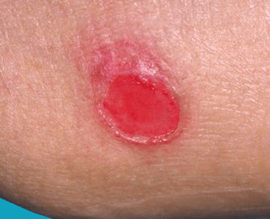

Decubitus ulcers occur in stages. The National Pressure Ulcer Advisory Panel (NPUAP) has a staging process to help your doctor diagnose and treat you:
The skin isn’t broken, but it’s discolored. The area may appear red if you have a light complexion. The discoloration may vary from blue to purple if you have a dark complexion. It may appear white.
The skin is open and shows signs of some tissue death around the wound. The ulcer is shallow with a red pink wound bed. There might also be a blister filled with fluid.
The ulcer is much deeper within the skin. It affects your fat layer and looks like a crater. There also might be something that looks like pus in the sore.
Many layers are affected in this stage, including your muscle and bone. A dark substance called “eschar” may be inside the sore.
The ulcer may be yellow or green. It can be soft and look like pus, or it can have a brown scab covering. If the damage to your tissue layers is extensive, it will need to be removed. However, if the covering of the ulcer is dry and stable, it shouldn’t be removed because it’s your body’s natural layer of protection.